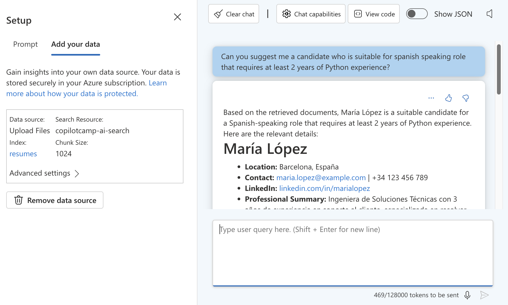
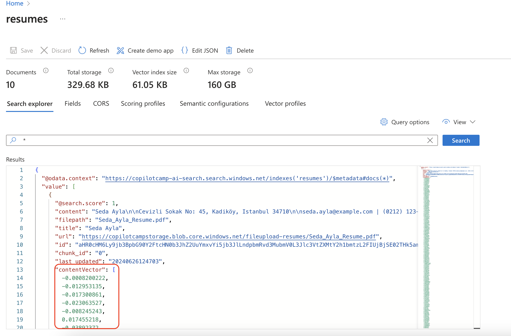

Lab 02 - Bring your data from Azure AI Search to your app
In this lab you will enable Retrieval-Augmented Generation for your custom engine copilot and integrate with Azure AI Search to chat with your data.
In this lab you will learn:
- What is Retrieval-Augmented Generation (RAG)
- Setup Azure resources
- Upload your documents to Azure AI Search
- Prepare your custom engine copilot for Vector Search
- Learn how to run and test your app
Introduction
What is Retrieval-Augmented Generation (RAG)?
Retrieval-Augmented Generation (RAG) is a technique used in artificial intelligence to improve the quality of responses generated by language models. Here's a simple example to understand it better:
Imagine you have a smart assistant that can write answers to your questions. Sometimes, this assistant might not know everything it needs to give a great answer. To help with this, RAG lets the assistant look up information from a large collection of documents, videos, images similar to how you might search the internet for answers. After finding the relevant information, the assistant then uses this data to write a better, more accurate response.
So, RAG combines two steps:
- Retrieval: Finding relevant information from a big pool of data.
- Generation: Using that information to create a detailed and accurate response.
This way, RAG helps in providing more informed and useful answers, making it very effective for tasks like answering questions, writing articles, and assisting with research.
In the previous exercise, you learned how to create a custom engine copilot and customize the prompt for defining the behavior of the AI chatbot, Career Genie. In this exercise, you'll apply vector search to a collection of resumes to find the best candidate for the job requirements. To enable vector search in Career Genie, you'll use the "Azure OpenAI Studio on your data" feature to:
- Create an index on Azure AI Search.
- Generate vector embeddings for the resumes (PDF documents).
- Upload the data in chunks to Azure AI Search.
Finally, you'll integrate your custom engine copilot with Azure AI Search to chat with your data and obtain the best results.
Benefits of using Vector Search
Vector search is an advanced technique used to find information quickly and accurately based on its meaning rather than just matching exact words. Unlike traditional text-based search, which relies on exact keyword matches, vector search uses numeric vectors to find content that is similar to your query. This enables Vector search to handle:
- Semantic or conceptual similarity: Matching concepts that are similar in meaning even if they use different words (e.g., "pastry" and "croissant").
- Multilingual content: Finding equivalent content across different languages (e.g., "pastry" in English and "gebäck" in German).
- Multiple content types: Searching across different formats (e.g., "pastry" in text and an image of a pastry).
Here is how vector search works:
- Converting text to vectors: Imagine turning words or sentences into a series of numbers (a vector) that captures the essence or meaning of that text. This is done using techniques like word embeddings or deep learning models.
- Storing vectors: These vectors are stored in a special database designed to handle them efficiently.
- Searching with vectors: When you search for something, your query is also converted into a vector. The search system then looks for vectors in the database that are close to your query vector in terms of meaning, not just exact word matches.
For example, if you search for "how to bake a cake" the system can find documents about "cake recipes" or "baking tips" even if they don't have the exact words "how to bake a cake" or even if the recipes are written in another language. This makes vector search powerful for finding relevant information based on context and meaning, especially in large datasets.
In summary, vector search improves the search process by focusing on the meaning behind the words, enabling more accurate and relevant results.
Exercise 1: Setup Azure Resources
You'll need to complete the Azure subscription pre-requisite before starting with this exercise.
Step 1: Create Azure AI Search service resource
What is Azure AI Search?
Azure AI Search (formerly known as "Azure Cognitive Search") provides secure information retrieval at scale over user-owned content in traditional and generative AI search applications.When you create a search service, you work with the following capabilities:
- A search engine for vector search, full text and hybrid search over a search index
- Rich indexing with integrated data chunking and vectorization
- Rich query syntax for vector queries, text search, hybrid queries
- Integration with Azure AI services and Azure OpenAI
- Open the browser of your choice and navigate to Azure Portal.
- Select Create a resource, then search for
Azure AI Search. Select the Azure AI Search service and then Create. - Fill out the following details and select Review + Create:
- Subscription: The Azure subscription for your Azure OpenAI Service
- Resource group: Select the pre-existing resource group you created earlier for Azure OpenAI service.
- Name: A descriptive name for your Azure OpenAI Service resource, such as
copilotcamp-ai-search. - Location: The location of your instance.
- Pricing Tier: Standard
Once your Azure AI Search service resource is created successfully, navigate to your resource, In Overview, copy and save Url. Then, navigate to Keys, copy and save Primary admin key. Both of them will be required later in the following exercises.
Step 2: Create a storage account service resource
- Open the browser of your choice and navigate to Azure Portal.
- Select Create a resource, then search for
Storage Account. Select the Storage Account service and then Create. - Fill out the following details and select Review, then Create:
- Subscription: The Azure subscription for your Azure OpenAI Service
- Resource group: Select the pre-existing resource group you created earlier for Azure OpenAI service.
- Name: A descriptive name for your Azure OpenAI Service resource, such as
copilotcampstorage. - Region: The location of your instance.
- Performance: Standard
- Redundancy: Geo-redundant storage (GRS)
Step 3: Create a text-embedding-ada-002 model
What does text-embedding-ada-002 do?
The text-embedding-ada-002 model on Azure OpenAI converts text into numeric vectors that represent the meaning of the text. This allows for vector search, where instead of matching exact words, the search finds text with similar meanings. It works with multiple languages and different content types, making it useful for comparing text across languages and formats. When used with Azure AI Search, it improves search results by finding the most relevant and contextually accurate information. This model is perfect for creating advanced search solutions and applications that need to understand natural language.
Open Azure OpenAI Studio in your browser, then select Deployments. Select Create a new deployment. Fill out the following details and select Create:
- Select a model:
text-embedding-ada-002. - Model version: Default.
- Deployment type: Standard.
- Deployment name: Recommended to use a memorable name, such as
text-embeddings. - Content Filter: Default.
Tip: Handling no quota available message
When you select a model, you may see No quota available message pop-up on top of the configuration page. To handle this, you have two options: 1. Select a different version or deployment type 1. Free up the resources on other deployments by requesting for more quota or adjust the existing quota
Exercise 2: Upload your documents to Azure AI Search using Azure OpenAI Studio
For this exercise, download resumes.zip and unzip the folder.
Step 1: Upload your documents to Azure AI Search
-
Open Azure OpenAI Studio in your browser, then select Chat playground. In the Setup section, select Add your data tab and then Add a data source.

-
Select Upload files (preview), then fill the details as the following and select Next:
- Subscription: Select the subscription you created your Azure resources.
- Select Azure Blob storage resource: Select your storage resource,
copilotcampstorage. (You'll see a message Azure OpenAI needs your permission to access this resource, select Turn on CORS.) - Select Azure AI Search resource: Select your Azure AI Search resournce,
copilotcamp-ai-search. - Enter the index name: Index name, such as
resumes. - Select the box for Add vector search to this search resource.
- Select an embedding model: Select your text-embedding-ada-002 model,
text-embeddings.

-
Select Browse for a file and select the pdf documents from the
resumesfolder. Then, select Upload files and Next. - Select Search type as
Vectorand chunk size as1024(Default), then Next. - Select
API Keyas Azure resource authentication type, then Next.
Step 2: Test your data on Azure OpenAI Studio
Once your data ingestion is completed, use Chat playground to ask questions about your data.
Tip: Making the most out of your data
Review your dataset before asking questions testing the vector search. Go through the resumes folder and recognize the resumes provided in different languages with diverse professions, years of experience, skills and more. Start chatting with your data by asking questions to find out the right candidate for a skill, language, profession, years of experience and other categories. Try to test out the combination of requirements to challenge the search experience!

Step 3: Sneak peek to your index on Azure AI Search
To understand more about your dataset and explore more, select resumes from the Add your data section of the Chat playground. This will redirect you to your resumes index on Azure AI Search.

First, let's include the vector content in our data. Select Fields tab in your Resumes index page, then check the box for contentVector, finally select Save.

Go back to Search explorer tab, select Query options in your Resumes index page and then change the API version as 2023-11-01, then select Close. To view your data, press Search.
Tip: Numeric vectors for each pdf document
When scrolling through your data, recognize that each document has contentVector parameter that contains the numeric vectors of the pdf document. These numeric vectors will be used for Vector Search to identify the best matching results.

Exercise 3: Integrate your app with Azure AI Search
For this exercise, ensure that you obtain Azure OpenAI text embedding deployment name and Azure AI Search key and endpoint.
Step 1: Configure environment variables
In your Career Genie project, navigate to env/.env.local.user and paste the following environment variables:
AZURE_OPENAI_EMBEDDING_DEPLOYMENT_NAME='<Your-Text-Embedding-Model-Name>'
SECRET_AZURE_SEARCH_KEY='<Your-Azure-AI-Search-Key>'
AZURE_SEARCH_ENDPOINT='<Your-Azure-AI-Search-Endpoint>'
Open teamsapp.local.yml and add the following snippet at the bottom of the file, under uses: file/createOrUpdateEnvironmentFile:
AZURE_OPENAI_EMBEDDING_DEPLOYMENT_NAME: ${{AZURE_OPENAI_EMBEDDING_DEPLOYMENT_NAME}}
AZURE_SEARCH_KEY: ${{SECRET_AZURE_SEARCH_KEY}}
AZURE_SEARCH_ENDPOINT: ${{AZURE_SEARCH_ENDPOINT}}
Navigate to src/config.ts and add the following snippet inside config:
azureOpenAIEmbeddingDeploymentName: process.env.AZURE_OPENAI_EMBEDDING_DEPLOYMENT_NAME,
azureSearchKey: process.env.AZURE_SEARCH_KEY,
azureSearchEndpoint: process.env.AZURE_SEARCH_ENDPOINT
Step 2: Configure Azure AI Search in your source code
Open src/prompts/chat/config.json in your project, then add data_sources inside the completion brackets:
"data_sources": [
{
"type": "azure_search",
"parameters": {
"endpoint": "$searchEndpoint",
"index_name": "resumes",
"authentication": {
"type": "api_key",
"key": "$searchApiKey"
},
"query_type":"vector",
"in_scope": true,
"strictness": 3,
"top_n_documents": 5,
"embedding_dependency": {
"type": "deployment_name",
"deployment_name": "text-embeddings"
}
}
}
]
Open src/prompts/chat/skprompt.txt and add the following line in your prompt:
Use the context provided in the `<context></context>` tags as the source for your answers.
Open the terminal in Visual Studio Code, and run the following script from the project root:
npm install fs
Go to src/app/app.ts and add the following parameter in your OpenAIModel:
azureApiVersion: '2024-02-15-preview'
Add the following import on top of the src/app/app.ts file:
import fs from 'fs';
In src/app/app.ts, replace the defaultPrompt inside the ActionPlanner with the following code snippet:
defaultPrompt: async () => {
const template = await prompts.getPrompt('chat');
const skprompt = fs.readFileSync(path.join(__dirname, '..', 'prompts', 'chat', 'skprompt.txt'));
const dataSources = (template.config.completion as any)['data_sources'];
dataSources.forEach((dataSource: any) => {
if (dataSource.type === 'azure_search') {
dataSource.parameters.authentication.key = config.azureSearchKey;
dataSource.parameters.endpoint = config.azureSearchEndpoint;
dataSource.parameters.role_information = `${skprompt.toString('utf-8')}`;
}
});
return template;
}
Step 3: Debug your app and chat with your data
Let's test Career Genie on Teams this time. Start debugging your app by selecting Run and Debug tab on Visual Studio Code and Debug in Teams (Edge) or Debug in Teams (Chrome). Microsoft Teams will pop up on your browser. Once your app details show up on Teams, select Add and start chatting with your app.
Tip: Asking questions about your data
Ensure your questions are related to your dataset. Go through pdf documents in the resumes folder to understand more about your data. Challenge your custom engine copilot by combining requirements and asking complex questions!